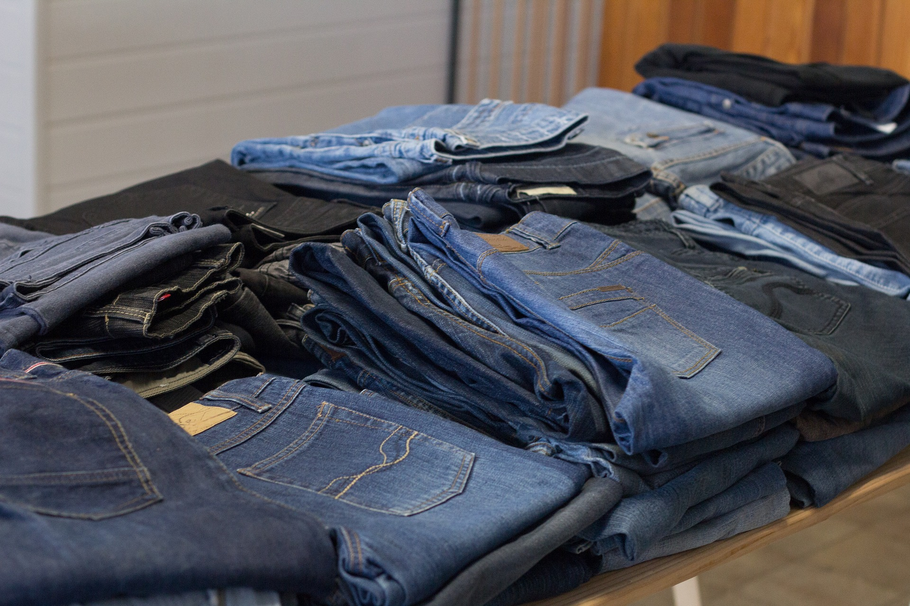
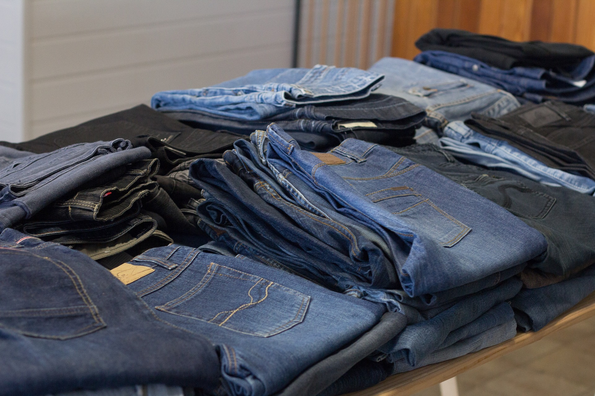

Seconde main
Un nouveau mode de consommation
Seconde main
Un nouveau mode de consommation

Le bon coin
L’idée principale du site réside dans la proximité des échanges entre utilisateurs. En effet, les recherches se font, exclusivement en France et ce par département. Pas d’envoi via la poste ou autre services d’envois, et un maximum d’interactions entre utilisateurs. Le site met en commun plus de 18 millions d’annonces, classées par type, caractéristiques produit, et groupe de produits. Une des avancées principales face au concurrent principale eBay est la gratuité immédiate du postage d’annonce (gratuité qui peut évoluer en souscrivant à certaines options), ainsi que la diversité du type d’annonces disponibles sur le site. On y trouve en effet des voitures d’occasion, des objets divers et variés, mais aussi des offres immobilières, des offres d’emploi, des offres de collocation… Le site est accessible aussi bien aux particuliers qu’aux professionnels (sous réserve du respect de certaines règles).
Source : etudier.com
Vinted
Fondée en 2008 en Lituanie et arrivée en France en 2013, la plateforme fédère aujourd'hui 23 millions de membres, dont 10 millions en France. En permettant la revente, simple et rapide de vêtements et accessoires qui ont déjà été portés, Vinted a réussi à attirer des générations en quête de nouveaux modes de fonctionnement. Pièces vintages ou plus modernes, on en trouve pour tous les goûts et à tous les prix. Désormais, acheter des vêtements d'occasion n'a plus rien de ringard, le phénomène est même devenu "branché". En 2019, selon la plateforme, environ 40 millions d'articles de mode de seconde main seront vendus et achetés en France sur Vinted.
Source : e-marketing.fr
Braderies
Braderie, brocante, marché aux puces ou vide-grenier, tous ces évènements se ressemble en réalité beaucoup : il s’agit de ventes mises en place dans un espace public ou privé, généralement en extérieur, où chacun peut tenir un petit stand et proposer ses produits. On y trouve par exemple des articles d’artisanat locaux, mais surtout des objets anciens ou de seconde main. Il s’agit d’un excellent moyen de trouver de petites perles pour sa décoration intérieure ou encore pour refaire son dressing. Les articles n’ont pas l’attrait du neuf comme en magasin, cependant ils ont d’autres atouts : premièrement, leur valeur vintage et le fait qu’il soit difficile de trouver facilement le même article ailleurs, mais également leur prix très souvent généreusement bradé.
 
Thrift stores
Les friperies, un terme bien générique et bien pratique ! On parle bien souvent de friperies pour englober tous les magasins de vêtements d’occasion. Mais leur fonctionnement est bien distinct d’autres types de boutiques. Une friperie, c’est une boutique de vêtements d’occasion, la plupart du temps indépendante de tout réseau de récupération de vêtements. Ils se fournissent grâce à des grossistes de vêtements d’occasion, généralement appelés “fripiers”. Et c’est cette façon de s’approvisionner qui fait que chaque friperie a une véritable âme ! Vous y retrouverez un style précis, et bien choisi. Qu’il s’agisse d’une décennie précise, ou d’un genre spécifique : une friperie, c’est bien souvent l’univers de son gérant. Des magasins bien rock’n’roll aux boutiques plus féminines, vous avez forcément une friperie qui vous correspond ! Un bémol cependant pour les chaînes de friperies (telles que Mad Vintage, ou encore Kilo Shop) qui se retrouvent généralement à travers toute l’Europe, et qui ont généralement un style plus unanime. Attention toutefois, si nous utilisons le terme friperie par simplicité, cela peut froisser certains gérants. Selon le magasin, vous verrez parfois plutôt le terme “magasin vintage”. Mais peu importe le mot utilisé, l’important est d’aimer les vêtements qu’on y trouve.
Source : frippy.co